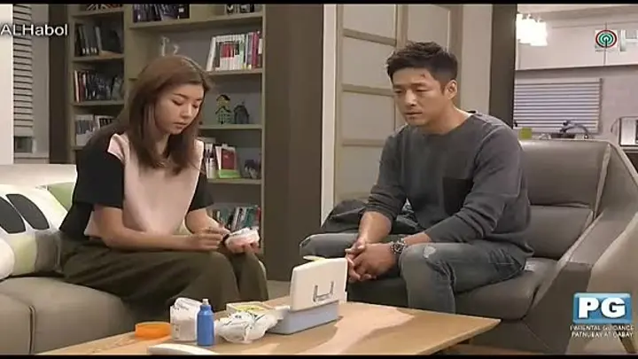
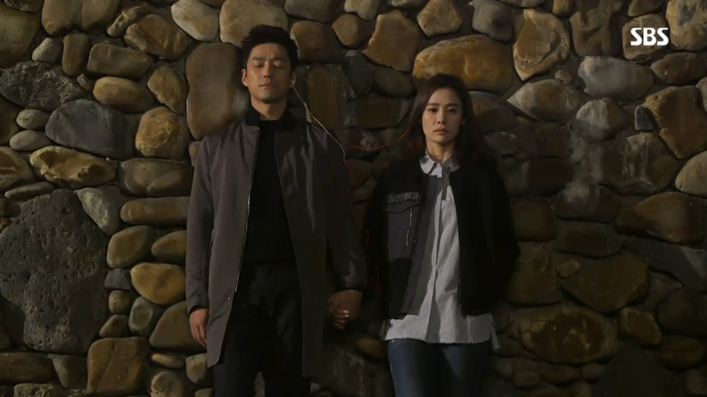
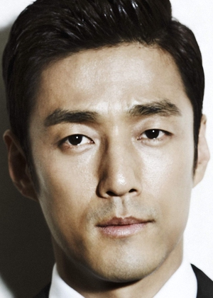

It is a 2015 South Korean television series starring Kim Hyun-joo, Ji Jin-hee, Park Han-byul and Lee Kyu-han. It aired on SBS's Saturdays and Sundays at 22:00 (KST) time slot from August 22, 2015 to February 28, 2016 for 50 episodes.
Scene Photo
 Movie Info
- The ambitious and successful lawyer, Do Hae-gang (Kim Hyun-joo), and her husband, Choi Jin-eon (Ji Jin-hee), have a dysfunctional relationship. They lose their child and Jin-eon starts an affair with a much younger girl, Seol-ri (Park Han-byul). Dokgo Yong Gi is Do Hae Gang's unknown twin sister. After the couple divorce, Hae Gang gets into a mysterious car accident and loses her memory. Baek Seok (Lee Kyu-han), mistaking Hae Gang as Yong Gi, saves Hae Gang and makes her live as Yong Gi. Hae Gang becomes Baek Seok's fiancé and lives with his family. What will happen when Jin Eon and Hae Gang meets again? Will the couple be able to go back to how they used to be before?
- Genre:Melodrama
- Director:Choi Mun-seok
- Writer:Bae Yoo-mi
- Original Release:August 22, 2015 –February 28, 2016
- No. of Episodes: 50 Episodes
Cast
Kim Hyun-joo as Do Hae-gang (Birth Name: Dokgo On-gi)/Dokgo Yong-gi  Ji Jin-hee as Choi Jin-eon Park Han-byul as Kang Seol-ri Lee Kyu-han as Baek SeokProduction
- Screenwriters:
- Bae Yoo Mi